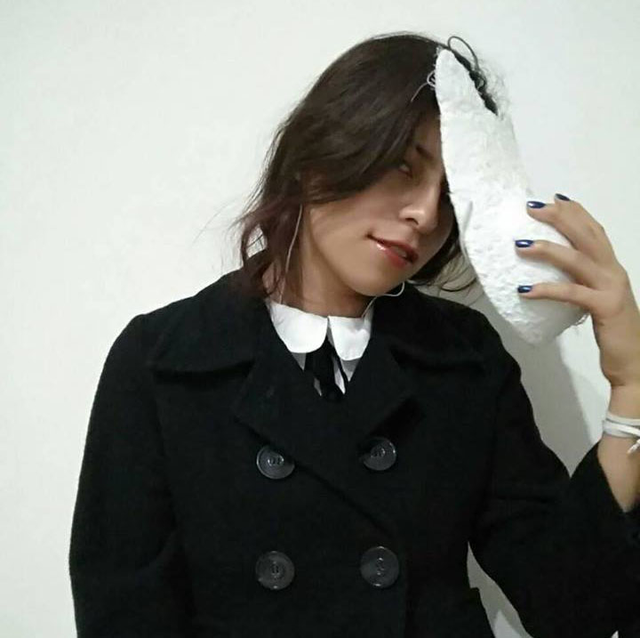

Mercedes Zepeda Salazar
Mi nombre es Mercedes Zepeda Salazar, pero también me gusta que me llamen Mercy, pues siento que es más como de confianza. Nací en Tehuacán, Puebla, tengo 23 años. Actualmente estudio en la Benemérita Universidad Autónoma de Puebla.
Soy una persona poco socieble, pero no me cierro a conversar con la gente, suelo tener apariencia seria y también es muy común que me vista de negro. Considero que mi personalidad es seria, pero no dejo de ser divertida cuando ya estoy en confianza, incluso hasta sería lo contrario a lo que aparento.
Me gustan mucho los gatos, el color gris y las cosas miniatura. Entre las actividades que me destacan es que siempre me desvelo, pero también duermo mucho en el día y como muy poco; también soy buena ilustrando y me encanta coser ropa.